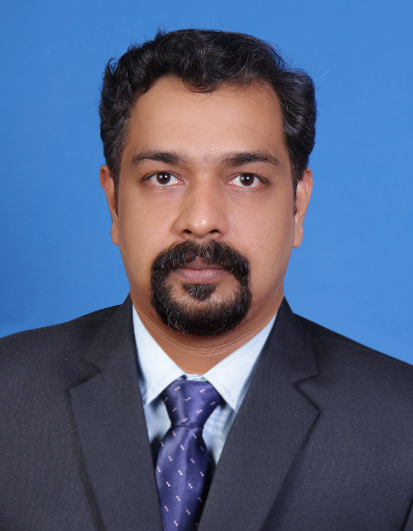
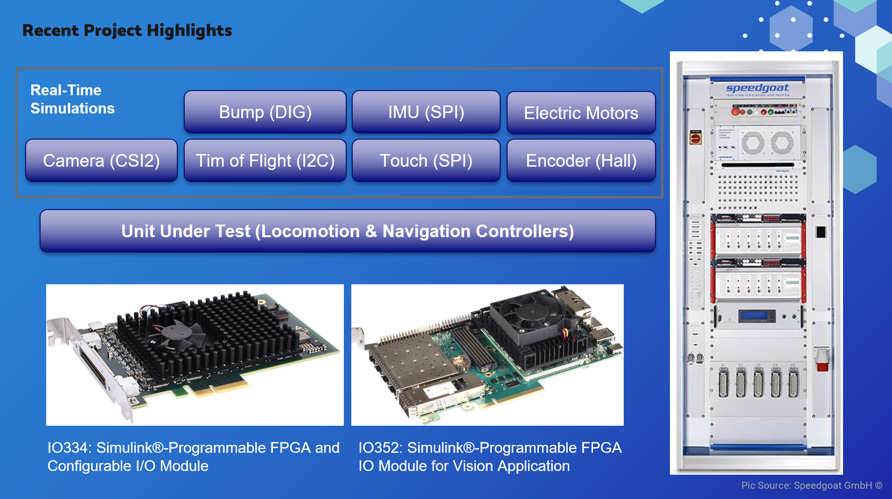
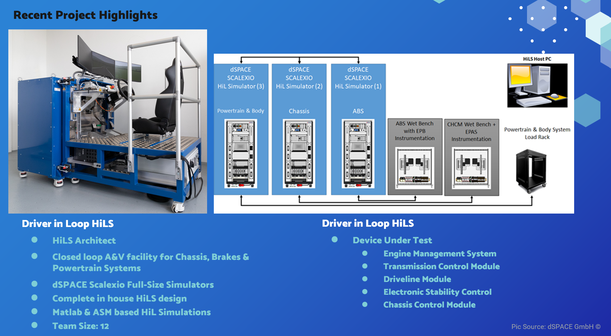
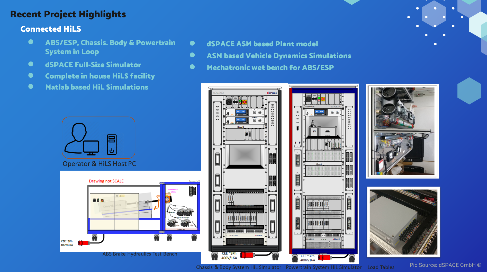
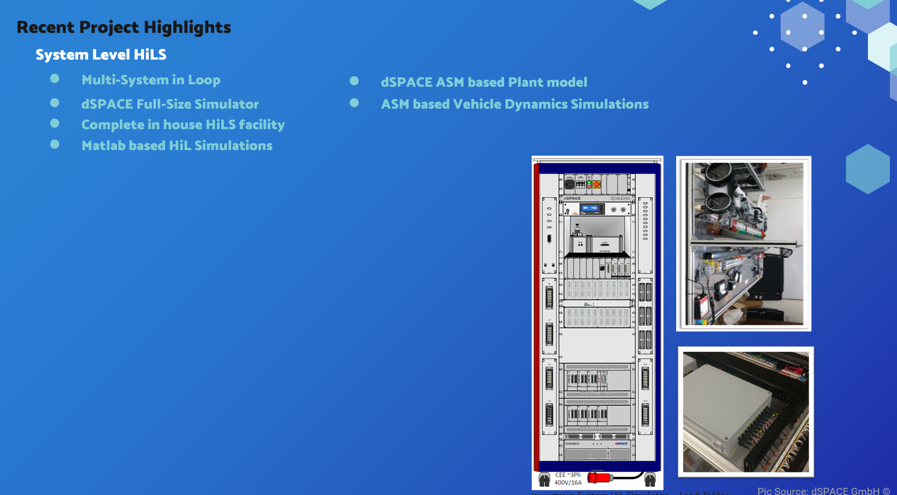
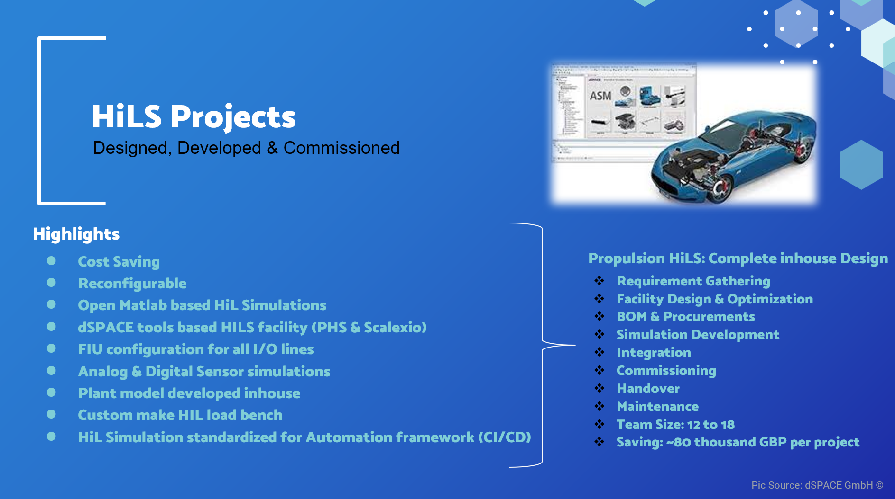
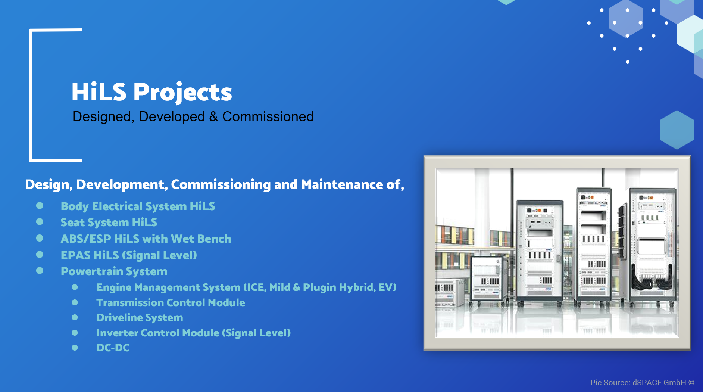
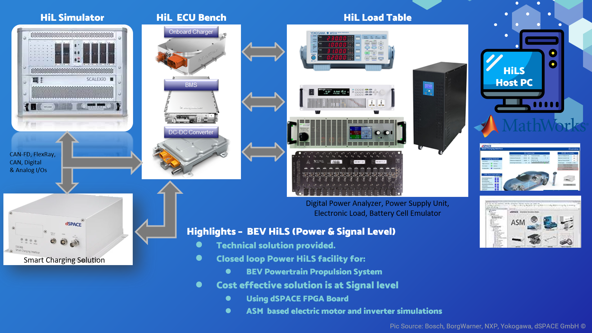
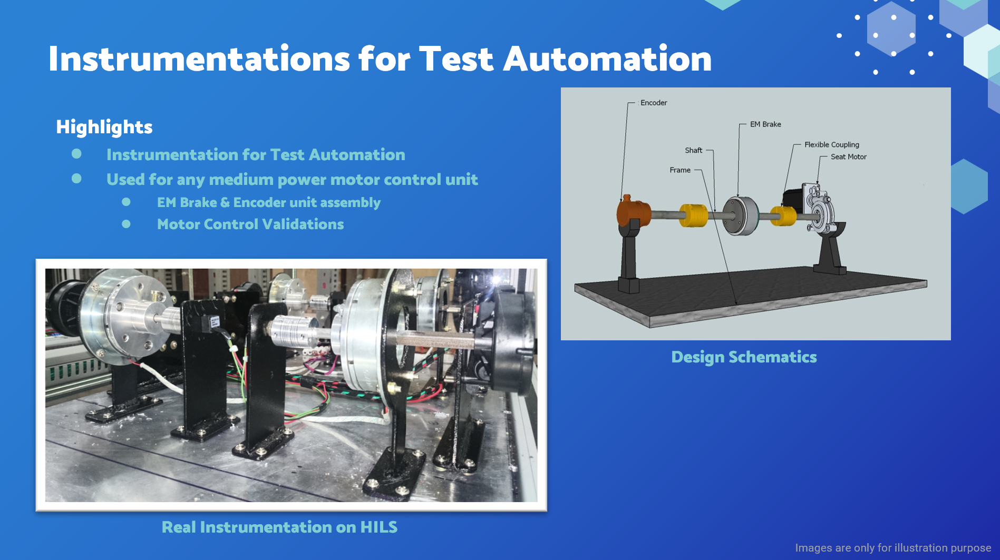
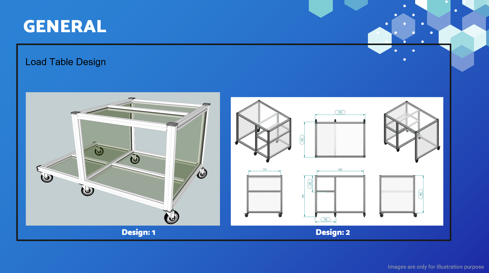

20+
Years Experience
Principal Test & Verification Engineer
Engineering leader with 20+ years of experience delivering Hardware-in-the-Loop simulation platforms, automated test systems and validation infrastructure for automotive, electrified powertrain, battery management and safety-critical applications.

About
Welcome to my professional portfolio — a Principal-level Test Facility Development and Verification & Validation Engineer with 20+ years of experience delivering advanced HiL simulation platforms, automated test systems, and validation infrastructures for automotive, electrified powertrain, battery management, and safety-critical applications. Recognised specialist in dSPACE, Speedgoat, and ETAS real-time closed-loop simulation environments, with a track record of building cost-effective in-house capabilities that cut program development costs and time-to-market.
I am an experienced engineer with over 19 years of success managing people and projects within embedded system development and real-time verification & validation environments. As an Associate Principal Engineer, I've driven performance excellence across the automotive and consumer electronics industries — leading teams in HILS, Test Automation & Validation (A&V), Model-Based System Engineering (MBSE) and Model-Based Design (MBD), and applying V-Cycle methodology throughout requirements, design, integration and testing.
Masters in Automotive Electronics
Post Graduate Diploma — Embedded System Design & Development
Bachelors Degree, Engineering — Electronics & Communication
Expertise
Two decades spent designing, building and running HIL simulation and real-time test facilities — and the teams and programmes around them.
Projects
A HILS facility tests controllers under conditions that are impractical or impossible to replicate in the real world — enhanced accuracy, cost efficiency, improved safety, faster development cycles, comprehensive validation. Below are a selection of the facilities I've designed, developed and commissioned from scratch, across aerospace & defence, automotive, energy, rail, marine, robotics and consumer electronics.

Locomotion controller (camera, ToF, bump switch, IMU, temperature, touch screen) & navigation controller (position, temperature, electric-motor actuation)

Powertrain system & chassis system

Active Safety System (ABS) & Powertrain (EMS, TCM, TCCM)

BCM, GWM, door & seat modules, HVAC, ABS/ESP, EPAS

Vehicle propulsion system

BCM, seat modules, CCU, ABS/ESP, EPAS, EMS, TCU

Battery Electric Vehicle (BEV) HILS facility, UK OEM — dSPACE ControlDesk/ModelDesk/ConfigurationDesk with ASM-based simulation models.

External instrumentation: electromagnetic brakes with position encoder, key-fob control automation, high-current FIU, high-current/voltage measurement, lambda (O2) sensor module.

ECU-agnostic interface enabling fast ECU swaps, I/O pin swaps, and UUT multiplexing — one HIL simulator serving multiple ECUs under test.
Knowledge
While preparing the test strategy for a complex, safety-critical ECU, I use a HIL facility from the earliest project stages — verifying generated code on an evaluation board, then RCP, then target hardware, following the V-model through MIL, SIL, PIL and HIL.
HIL is a versatile tool that extends far beyond integration and testing — it applies across the entire V-cycle, from early proof-of-concept to deployment and maintenance.
Early research & proof of concept: test the feasibility of approaches in a controlled environment before committing to a design.
Requirements: validate and refine specifications by simulating the operational environment.
Architecture & design: assess how components interact in real time to inform structure and interfaces.
Implementation & integration: test components in isolation, then combine real hardware with simulated environments.
Test & validation: rigorous, repeatable testing including edge cases too risky for the real world.
Deployment & maintenance: ongoing regression testing as updates and patches are applied.
HILS can be implemented at three levels, each suited to a different kind of system interaction.
Signal Level HIL: the most common form — the ECU's control units interact with the simulated environment via digital or analog electrical signals.
Power Level HIL: simulates the flow of power itself — real-world electrical loads, battery systems, motors, or entire power grids.
Mechanical Level HIL: simulates mechanical loads and interactions, often via physical actuators or hydraulic systems that mimic real-world forces and motion.
Rapid Control Prototyping lets engineers deploy Simulink-designed control algorithms straight onto target hardware — pairing it with HILS makes for a fast, low-risk validation workflow.
The development board runs the actual control software while HILS simulates the rest of the system (vehicle, plant, or mechanical system) — enabling thorough testing without the cost or risk of full real-world trials.
Benefits: iterative development and validation, early risk reduction, and cost efficiency versus physical prototypes.
Applications: automotive ECU software validated against a simulated vehicle; aerospace flight-control systems tested against simulated aircraft dynamics; robotic controllers validated against a simulated environment before hardware is at risk.
Contact
I am actively seeking new opportunities to leverage my experience in embedded systems and real-time verification & validation. If you have a role that could benefit from my engineering leadership and technical background, I'd love to hear from you.